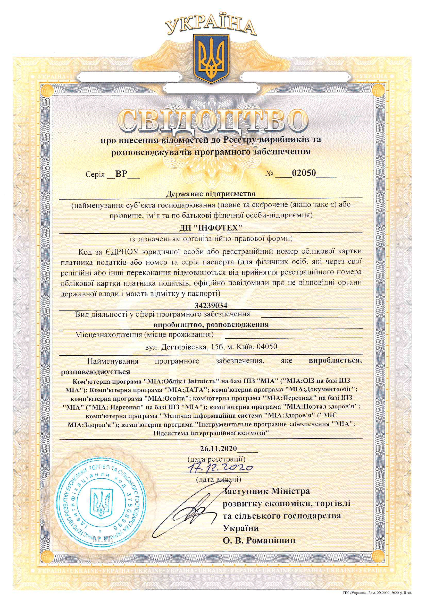

Зміст
Тут зібрана інформація про модулі інформаційної системи МІА:СЕД які представлені в детальному опису архітектури в пакеті документації по комплексним засобам захисту (КЗЗ) продукту компанії ДП "ІНФОТЕХ" — МІА:СЕД. Система складається з обмеженого набору модулів (100 модулів), який поністю покриває функціональні вимоги Постанови КМУ №55.
1. Контролери сторінок
2. Контрольні елементи
3. Комболукапи та селектори
4. ERP-схема даних
5. Сервіси
6. Держінформресурс
7. Шаблони документів
8. Схеми дерев
9. Процеси
10. Документи
11. Міні-редактори
12. X.509 Аутентифікація
Відповідність законодавству
Загальні положення
- 2657-XII ЗАКОН УКРАЇНИ Про інформацію
- 74/98-ВР ЗАКОН УКРАЇНИ Про Національну програму інформатизації
- 851-IV ЗАКОН УКРАЇНИ Про електронні документи та електронний документообіг
- 2155-VIII ЗАКОН УКРАЇНИ Про електронні довірчі послуги
- 393/96-ВР ЗАКОН УКРАЇНИ Про звернення громадян
- 2939-VI ЗАКОН УКРАЇНИ Про доступ до публічної інформації
- 386-2013-р КАБІНЕТ МІНІСТРІВ УКРАЇНИ РОЗПОРЯДЖЕННЯ #386-Р Про схвалення Стратегії розвитку інформаційного суспільства в Україні
- 373-2006-п КАБІНЕТ МІНІСТРІВ УКРАЇНИ ПОСТАНОВА #373 Про затвердження Правил забезпечення захисту інформації в інформаційних, телекомунікаційних та інформаційно-телекомунікаційних системах
МІА: Документообіг
- 851-IV ЗАКОН УКРАЇНИ Про електронні документи та електронний документообіг
- 80/94-ВР ЗАКОН УКРАЇНИ Про захист інформації в інформаційно-телекомунікаційних системах
- 55-2018-п КАБІНЕТ МІНІСТРІВ УКРАЇНИ ПОСТАНОВА #55 Деякі питання документування управлінської діяльності
- z1854-12 МІНІСТЕРСТВО ЮСТИЦІЇ УКРАЇНИ НАКАЗ #1600/5 Про затвердження Порядку роботи з електронними документами через систему електронної взаємодії органів виконавчої влади з використанням електронного цифрового підпису
- 749-2018-п КАБІНЕТ МІНІСТРІВ УКРАЇНИ ПОСТАНОВА #749 Про затвердження Порядку використання електронних довірчих послуг в органах державної влади, органах місцевого самоврядування, підприємствах, установах та організаціях державної форми власності
- z1039-20 МІНІСТЕРСТВО ЦИФРОВОЇ ТРАНСФОРМАЦІЇ УКРАЇНИ АДМІНІСТРАЦІЯ ДЕРЖАВНОЇ СЛУЖБИ СПЕЦІАЛЬНОГО ЗВ’ЯЗКУ ТА ЗАХИСТУ ІНФОРМАЦІЇ УКРАЇНИ НАКАЗ #140/614
- z1306-11 МІНІСТЕРСТВО ОСВІТИ І НАУКИ, МОЛОДІ ТА СПОРТУ УКРАЇНИ НАКАЗ #1207 Про вимоги до форматів даних електронного документообігу в органах державної влади. Формат електронного повідомлення
- z1421-14 МІНІСТЕРСТВО ЮСТИЦІЇ УКРАЇНИ НАКАЗ #1886/5 Про затвердження Порядку роботи з електронними документами у діловодстві та їх підготовки до передавання на архівне зберігання
- v0144774-20 ДЕРЖАВНЕ ПІДПРИЄМСТВО "УКРАЇНСЬКИЙ НАУКОВО-ДОСЛІДНИЙ І НАВЧАЛЬНИЙ ЦЕНТР ПРОБЛЕМ СТАНДАРТИЗАЦІЇ, СЕРТИФІКАЦІЇ ТА ЯКОСТІ" НАКАЗ #144 Про прийняття та скасування національних стандартів ДСТУ 4163:2020 та ДСТУ 9031:2020
МІА: Провадження
- 4651-VI КРИМІНАЛЬНИЙ ПРОЦЕСУАЛЬНИЙ КОДЕКС УКРАЇНИ
- v0298905-20 ОФІС ГЕНЕРАЛЬНОГО ПРОКУРОРА НАКАЗ #298 Про затвердження Положення про Єдиний реєстр досудових розслідувань, порядок його формування та ведення
Інсталяція
Приклад системи, MIA:Документообіг ДП "Інфотех", побудованої на базі відкритої платформи CRM для Ericsson Erlang/OTP. В сутності система підтримки зв'язків з користувачами це система документообігу
Пререквізити для Ubuntu
$ sudo apt install erlang elixir build-essential libcsv3 libcsv-dev cmake
$ sudo apt install unoconv imagemagick onlyoffice-ds
Публікація
Компіляція та запуск екземпляру
$ mix deps.get
$ mix release
$ _build/dev/rel/crm/bin/crm daemon
Підключення до екземпляру
$ _build/dev/rel/crm/bin/crm remote
Після цього відкрийте посилання localhost:50111/app/ldap.htm.
Засвідчувальні документи
Сертифікати та свідоцтва
 |  | |
Розробники
- Ігор Городецький
- Андрій Задорожній
- Іван Кулик
- Вікторія Кошолап
- Богдан Котенко
- Денис Шкурко
- Андрій Цехмейструк
- Артем Сітало
- Максим Сохацький
- Руслан Мороз
- Ірина Костюк
- Максим Коцюк
- Олександр Анякін
- Ігор Чернов
- Антон Нестеренко
- Борис Трохимчук
- Валерій Каленик
- Владислав Калтименко
- Олександр Наумов
- Олександр Пальчиковський